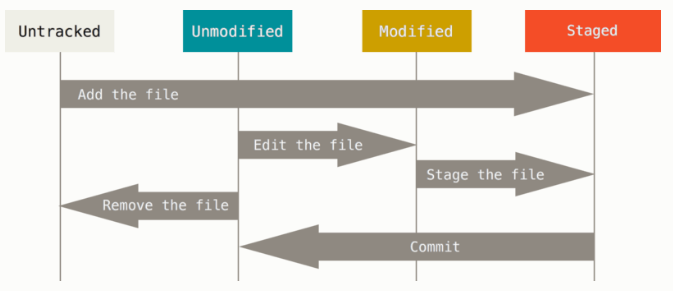

Git是现在最流行的分布式版本控制系统，Git可以在离线状态下工作而且它的分支管理操作特别好用。本文是最精简的Git使用指南
在GitHub上新建一个库以后
当我们要在本地新建一个库，并且关联远程仓库时，执行一下命令：
1 | echo "# Blog" >> README.md |
当我们要为现有库添加与远程仓库，并且提交现有代码到远程仓库时，执行一下命令：
1 | git remote add origin git@github.com:XinXingAstro/Blog.git |
操作git的更详细内容如下：
安装Git
Windows版官网下载地址 使用默认选项安装；
Mac上面直接安装xcode；
安装完成后配置全局用户名和邮件：
git config --global user.name "Your Name" //--global是设置全局的username和useremail
git config --global user.email "email@example.com"
如果不进行全局设置，可以在每个库中单独设置:
git config --local --list //查看本地库的属性，里面有username和useremail
Git库的基本操作
Git追踪文件修改而不是文件本身；
通过 git --help 来查看所有命令的说明；
.gitignore文件会让git忽略一些文件这里是官网的模版
ssh-keygen -t rsa -C "youremail@address.com" //创建SSH密钥
git clone <SSH Key/HTTPS> //克隆远程库，git支持https协议但是通过SSH克隆速度最快；从远程克隆的时候，git自动把本地的master分支和远程的master分支对应起来了，远程仓库的默认名称是origin
git init //将项目文件夹初始化为git仓库
git pull //将远程库的更改合并到当前分支，相当与git fetch origin dev + git merge FETCH_HEAD
git remote //管理正在追踪的远程仓库，-v 查看仓库名 地址 和fetch pull权限
git remote add origin <SSH KEY/HTTPS> //关联远程仓库
git branch --set-upstream <localbranch> origin/<branch> //建立本地分支和远程分支的关联
git push -u origin master //将本地master分支推送到远程origin库； -u 参数会关联本地分支和远程分支
git checkout -b dev origin/dev //本地创建和远程分支对应的分支
git status //查看仓库当前的状态
在我们编辑文件时，Git会将其视为已修改，我们分阶段修改的文件，可以一次性提交所有更改，循环重复。
git add <filename> //将文件修改提交到暂存区
git commit -m "本次提交的说明" //将暂存去的全部文件修改提交到当前分支
git diff <filename> //查看具体的变更内容
diff的输出格式可参考这个网站
git log //显示从最近到最远的提交日志，加上 --pretty=oneline 参数每条日志仅占一行
git reflog //查看引用日志
撤销更改
git reset --hard HEAD~1 //将版本库回退到上一个版本，git用HEAD指针指向当前分支的当前版本，HEAD~n表示上n个版本
git reset --hard <commit id> //将版本库设置成任意一个版本
git checkout -- <filename> //丢弃工作区修改
如果修改提交到暂存区，想丢弃修改分两步：
git reset HEAD <filename> //将修改撤回到工作区git checkout -- <filename> //丢弃工作区修改
如果修改提交到当前分支时，就要用版本回退撤销修改
git rm <filename> //将文件从版本库中删除，如果文件没从版本库中删除，而是被误删，可以用 git checkout -- <filename> 将文件恢复到之前提交的最新版本
git config --global color.ui true //让git显示颜色
分支管理
git branch //查看分支
git branch <branchname> //创建分支
git checkout -b <branchname> //创建+切换分支
git checkout <branchname> //切换分支
git merge <branchname> // 默认使用Fast forward模式合并某分支到当前分支，删除被合并分支后会丢掉分支信息。当git无法自动合并时，必须手动解决冲突，然后再提交合并
git merge --no-ff -m "your commit mesage" <branchname> //使用普通模式合并分支，合并完成后可以看到合并历史
git branch -d <branchname> //删除分支
git branch -D <branchname> //强行删除没有被合并过的分支
git log --graph //查看分支合并图，可以加–pretty=oneline --abbrev-commit参数
开发一个功能，修改一个bug，最好在原分支上新建一个分支进行操作，完成后再合并回原来分支
tag操作
git tag //查看所有标签
git show <tagname> //查看标签信息
git tag <name> //name一般是版本号，就会在当前分支上的当前commit上打一个tag，tag就是指向某个commit的指针，tag不能移动
git tag <commit id> //为指定commit打标签，可以用git log --pretty=oneline --abbrev-commit 查看历史commit id
git push origin <tagname> //推送一个标签到远程库
git push origin --tags //推送全部标签到远程库
git tag -a <tagname> -m <tagmessage> <commit id> //-a指定标签名，-m指定说明文字
git tag -d <tagname> //删除标签
git push origin :refs/tags/<tagname> //删除一个远程标签，首先要删除本地标签，然后再用本命令删除远程标签
保存工作现场操作
git stash //保存工作现场
git stash list //查看工作现场列表
git stash apply stash@{n} //恢复第n个工作现场，恢复后stash内容不删除
git stash drop stash@{n} //删除第n个工作现场
git stash pop //恢复工作现场并删除stash内容